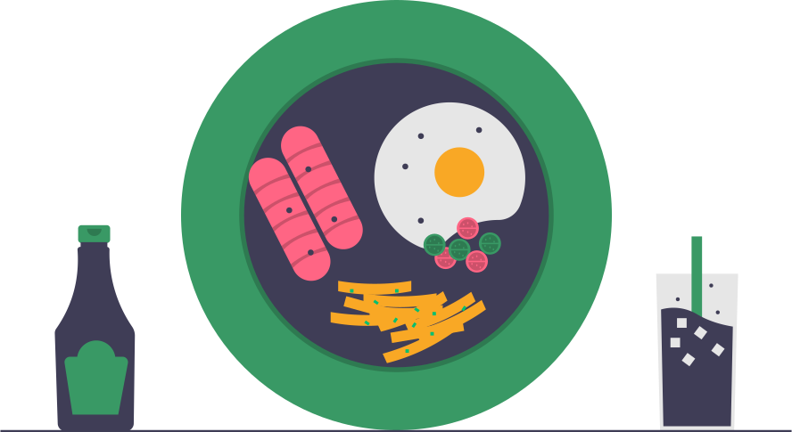
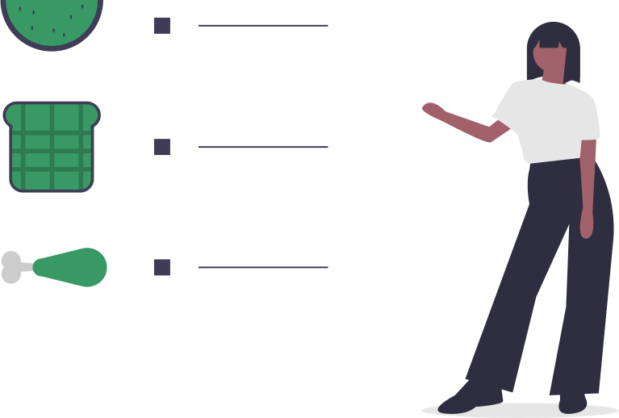
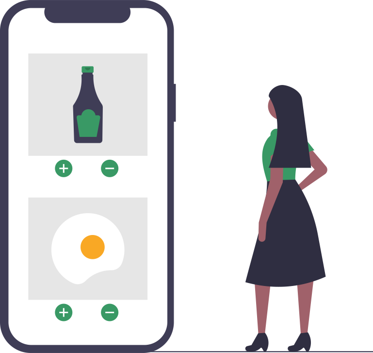

<ion-content *ngIf="checked">
  <ion-slides>

    <ion-slide>
      <div class="slide">
        
        <h2>Welcome</h2>
        <p><b>Klory</b> is a new way to keep your calorie count on check.</p>
      </div>
    </ion-slide>

    <ion-slide>
      
      <h2>What is Klory?</h2>
      <p><b>Klory</b> is a new app developed by <b>Hriscu Ovidiu-Constantin</b> that allows you to easily keep track of what you eat.</p>
    </ion-slide>

    <ion-slide>
      
      <h2>How do I use it?</h2>
      <p><b>Klory</b> is very simple to use. First of all, you have to create an account from within our app and then you can start keeping track of your eating history.</p>
    </ion-slide>

    <ion-slide>
      <div class="title-group">
        
        <h2 class="subtitle">{{subtitle}}</h2>
      </div>

      <div class="buttons">
        <ion-button size="large" (click)="navigateTo('login')">Login</ion-button>
        <ion-button size="large" (click)="navigateTo('register')" fill="outline">Register</ion-button>
      </div>
    </ion-slide>
  </ion-slides>
</ion-content>